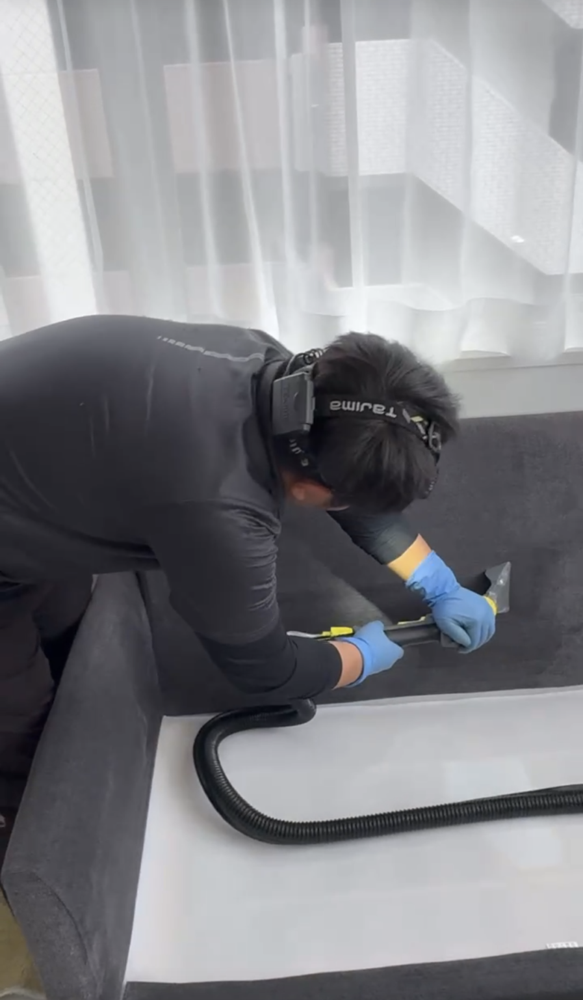
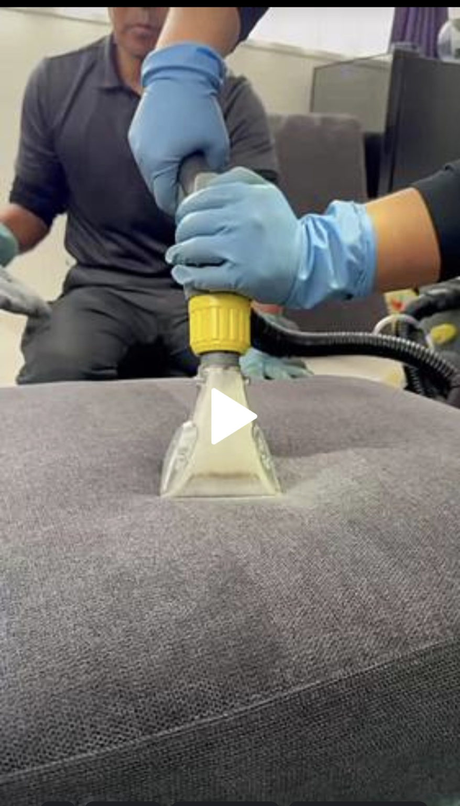
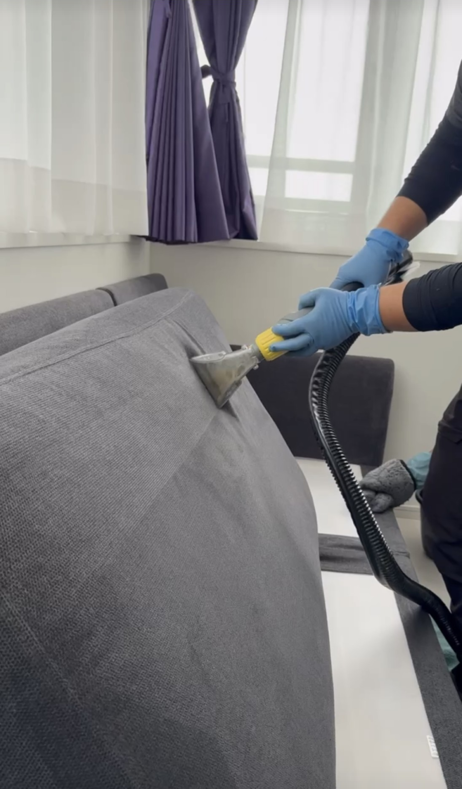
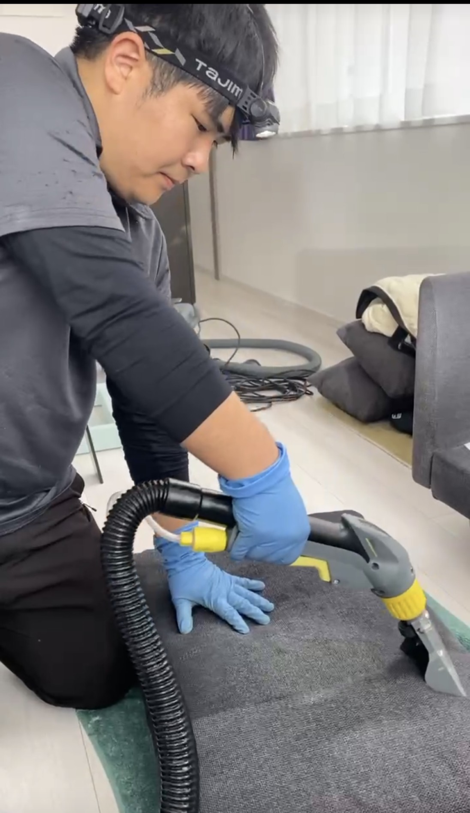

文京区マンションA様ご自宅のソファ洗浄クリーニングをしました！
文京区のマンションA様のご自宅ソファの洗浄クリーニングを実施しました！かわいいワンちゃんが少しよごしてしまった3人掛けのソファを、マット・座席面・全て外して専用クリーニング薬剤を用いて、リンサー洗浄バキュームクリーニングを実施しました！みるみる汚水が採取出来て、すっきり綺麗になりました！除菌・除塵・シミ汚れ・ダニ除去などDAIZENプロフェッショナルメソッドを用いて実施しました！



